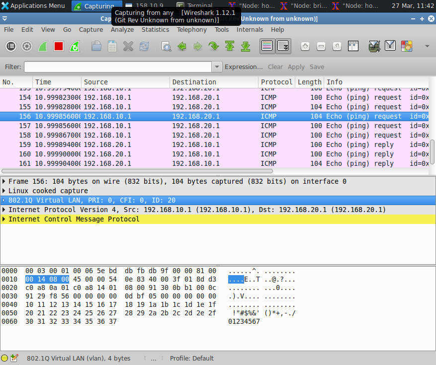
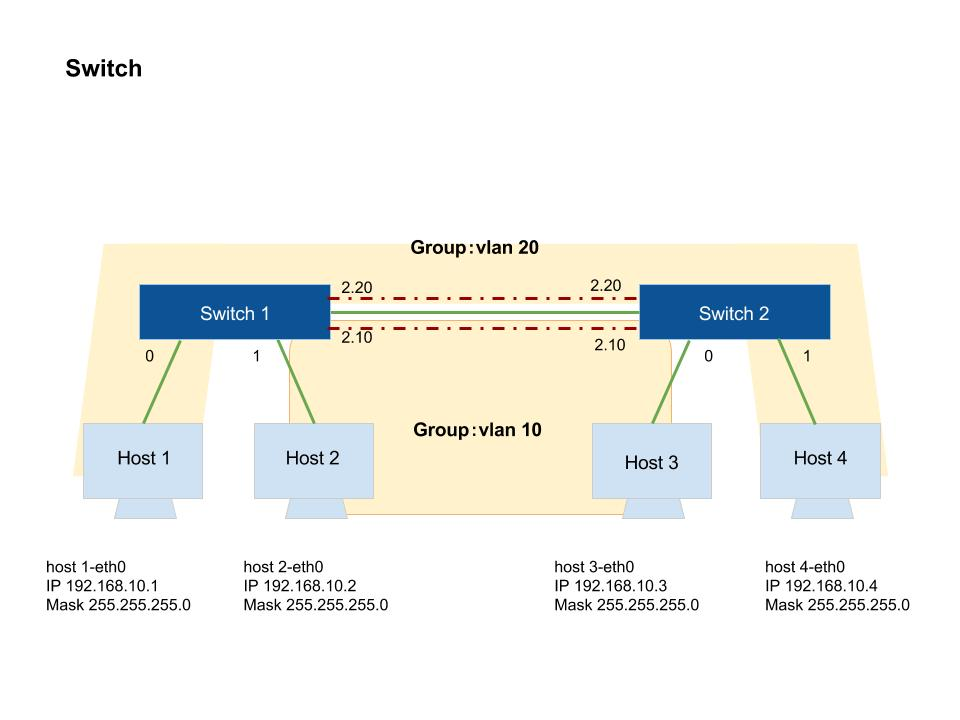

快了，這篇打完進度就趕上了，一堆書沒看，一堆外務….
還有日本旅行的行程還沒處理，真把自己當超人再操 OAO
這堂課主要觀念在講 VLAN，透過 Bridge & Switch 的實作
1. Bridge(1)
a. 網路拓樸設定
b. 實驗操作
2. Bridge(2)
a. 網路拓樸設定
b. 實驗操作
3. Switch
a. 網路拓樸設定
b. 實驗操作
Bridge(1)
網路拓樸設定

模擬 3 個 Hosts 中間經過一個 Router。
參考範例：example
實驗操作
進入 terminal
user:$ chmod +x test5.py user:$ sudo ./test5.py # 檢查 Bridge & Switch 狀態 mininet> bridge_1 ifconfig mininet> router_1 ifconfig # 檢查網路是否暢通 mininet> host_1 ping host_2 -c 3 mininet> host_1 ping host_3 -c 3 mininet> host_1 ping host_4 -c 3 mininet> host_2 ping host_3 -c 3 mininet> host_3 ping host_4 -c 3
如果都沒錯誤，卻又在 bridge 下沒法互 ping，請參考先前文章安裝 Bridge
Bridge(2)
網路拓樸設定

模擬 3 個 Hosts 中間經過一個 Router。
參考範例：example
實驗操作
安裝 VLAN，下
sudo apt-get install vlan進入 terminal
user:$ chmod +x test6.py user:$ sudo ./test6.py # 檢查 Bridge & Switch 狀態 mininet> bridge_1 ifconfig mininet> router_1 ifconfig # 檢查網路是否暢通 mininet> host_1 ping host_2 -c 3 mininet> host_1 ping host_3 -c 3 mininet> host_1 ping host_4 -c 3 mininet> host_2 ping host_3 -c 3 mininet> host_3 ping host_4 -c 3封包分析：可以看到 VLAN Tag 的變化
mininet> xterm host_1 host_4 bridge_1 # 讓 Host 1 Host 4 監聽並寫入檔案 host_1:$ tcpdump -i host_1-eth0 -U -w host_1 host_4:$ tcpdump -i host_1-eth0 -U -w host_4 # Bridge 1 開啟 Wireshark，並選擇 any 網卡來監聽 bridge_1:$ wireshark mininet> host_1 ping host_3 # 封包分析 host_1:$ wireshark host_1 host_4:$ wireshark host_4

在 Bridge 1 下可以看到 VLAN Tag，Host 1 下則看不到，Host 4 只會收到學習的廣播封包
Switch
網路拓樸設定

模擬 3 個 Hosts 中間經過一個 Router。
參考範例：example
實驗操作
進入 terminal
user:$ chmod +x test7.py user:$ sudo ./test7.py # 檢查 Bridge & Switch 狀態 mininet> switch_1 ifconfig mininet> switch_2 ifconfig # 檢查網路是否暢通，VLAN 群組不同不能互 ping # Host 1 & Host 4 可互 ping，Host 2 & Host 3 可互 ping mininet> host_1 ping host_2 -c 3 mininet> host_1 ping host_3 -c 3 mininet> host_2 ping host_3 -c 3 mininet> host_3 ping host_4 -c 3